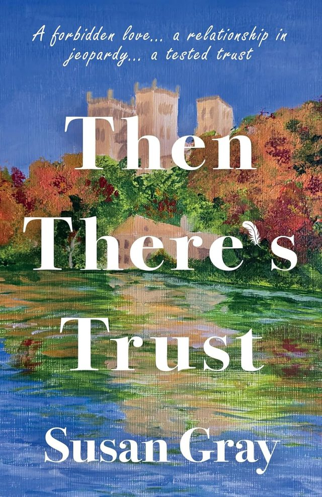
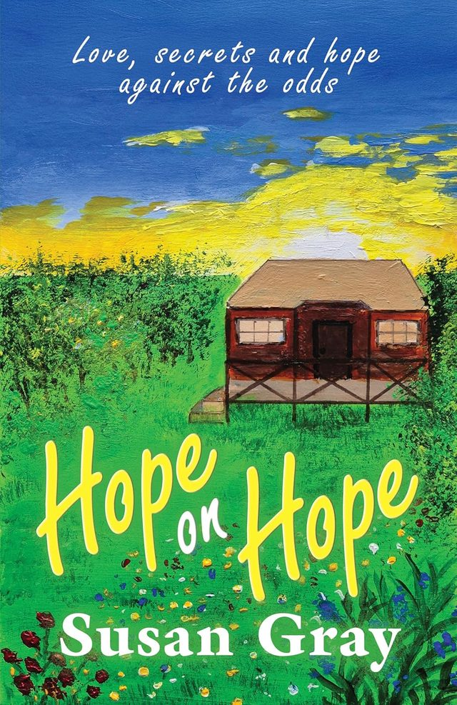
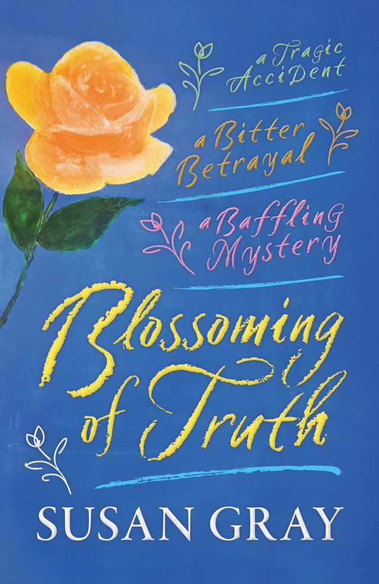

Blossoming of Truth, book three
Then There’s Trust
A gripping emotional story of love, fidelity and trust set in 1950s northeast England. Darcy Dukas is fearless and feisty, but can she be trusted? When Marcel Duval arrives in Durham to establish his detective agency, she agrees to work with him. But is she prepared for the risks?
In 1952 Josh Smallwood returns home after National Service and befriends Judy, a young nurse, only to find any liaison with her is forbidden by her family. And a shroud of guilt clings to Chantal Martin: will she ever be free from its taint?
Perfect for fans of Kate Morton, Victoria Hislop and Lucinda Riley.

Blossoming of Truth, book two
Hope on Hope
In WW2 as her homeland France is occupied, Chantal receives a letter with a missing page. What wartime secret did her beloved Sam want to divulge? She is drawn into the French Resistance, and when the war ends she sets out to trace her lost love.
It’s 1946 and headstrong Darcy reunites with her aunt Chantal. Can secrets from the past and life-altering circumstances refine Darcy’s attitudes?
Love, secrets and hope against the odds.

Blossoming of Truth, book one
Blossoming of Truth
When an attractive young woman seeks refuge in his home during a blizzard, Tom Smallwood is convinced they have met before. As their friendship develops, her persistent denial of their previous connection threatens to shake the bedrock of Tom’s life code.
A tragic accident robs Tom of his beloved brother, and his world implodes further when he is arrested. Can his pillars of truth and integrity hold fast and win him the heart of the woman he adores?
A tragic accident. A bitter betrayal. A baffling mystery.
Where it began
Susan’s debut novel was Spanish House Secrets, and she has written eight novels in all, with four published so far. Her plots are set in the northeast England she calls home.
About Susan
“Never too old to follow your dreams” became my mantra when I began writing novels after celebrating a significant birthday. I try to entwine mystery and romance, and I set my novels in the early twentieth century.
I live with my husband in northeast England, which is where my books are set. I love people watching, and my characters come from the many strangers I’ve observed.
Where to find me
My books are in independent bookshop The Book Dragon, which also listed Then There’s Trust in April 2026.